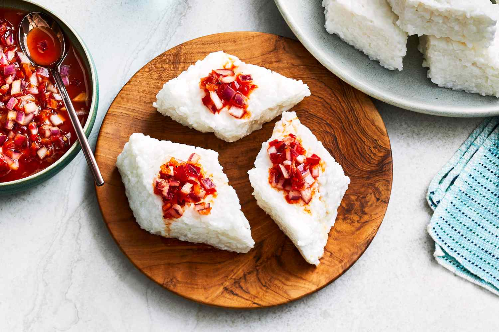

Milk Rice(“Kiribath”)

Description
A true Sri Lankan classic, “Kiribath” or Milk Rice as the Westerners call
it, is a traditional breakfast dish as well as a celebratory treat for
special occasions
Ingredients
- 2 cups of short grain white rice.
- 3 cups of water.
- 2 cups of thick Coconut Milk
- 2 teaspoons of Salt
- 1 Stick Cinnamon, optional.
Steps
- Wash rice thoroughly
- Add Rice and water in a pan and bring it to boil.
- Cover and cook over medium heat for about 15 minutes.
-
Add Coconut Milk, salt and the cinnamon and stir the mixture well
preferably with a wooden spoon.
-
Cover the pan once again and simmer on low heat for a further 10 - 15
minutes.
-
Once all the Coconut milk is well absorbed and you see gooey steaming
rice, remove the cinnamon stick .
- Cool slightly and turn the rice on to a flat plate/tray.
-
Mark or cut diamond/square shapes and serve with a side dish of your
choice, such as banana, jaggery , chillie paste, Lunumiris (traditional
onion and chillie sambol) or even a spicy fish or Chicken Curry
Home